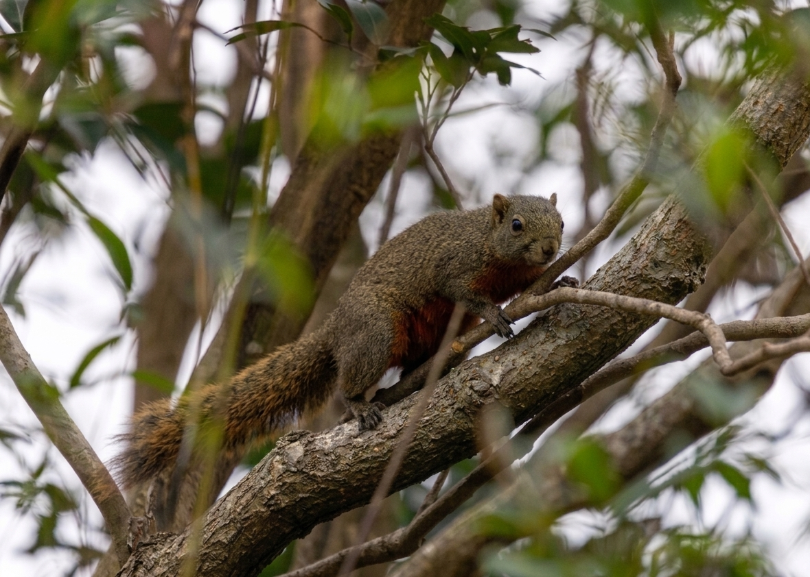
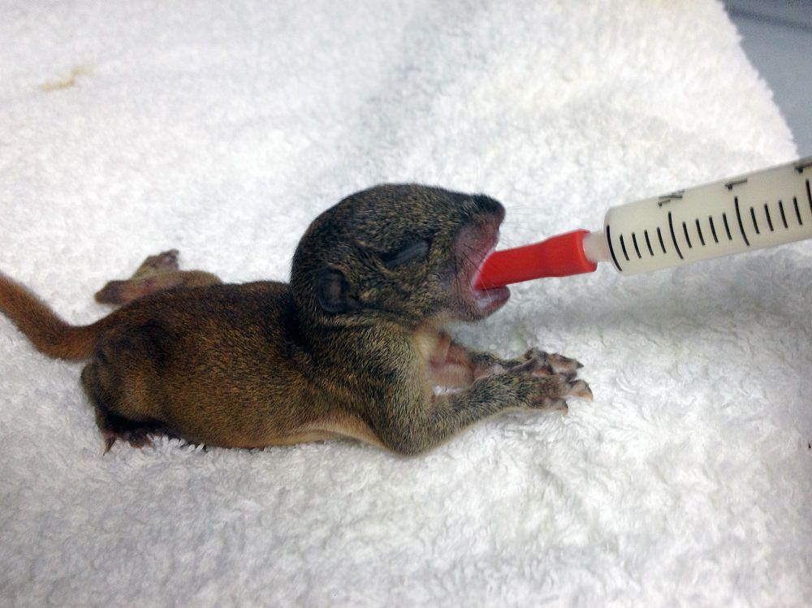
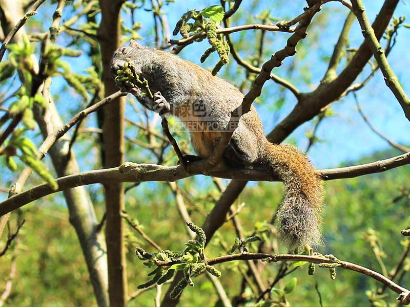

Documenting our little neighbors in Hong Kong and tracking conservation efforts across the region.

Campus Sighting
Near Gordon Wu Hall • Nov 2025
That's a Pallas's squirrel spotted right from our classroom window! It is the most popular squirrel species found in Wah Yan and throughout Hong Kong. These agile climbers have adapted perfectly to our urban-greenery balance.
"The cuter an animal is, the more it tends to be traded. Fortunately, Pallas's Squirrel has integrated into our ecosystem without causing major disruptions so far."
Latest headlines in squirrel conservation and wildlife protection.

A baby Pallas's squirrel was rescued in Wan Chai and passed to the Wild Animal Rescue Centre at Kadoorie Farm for rehabilitation.
Read Full Story
Did you know the Pallas's squirrel subspecies in HK has a distinctive black dot on its tail? Learn how to identify them in the wild.
Learn MoreProtecting our ecosystem means stopping the release of exotic species. AFCD provides new resources for urban wildlife co-existence.
Official GuidelinesHelp us build the most comprehensive database of Wah Yan squirrel activity. Every photo helps our conservation research.